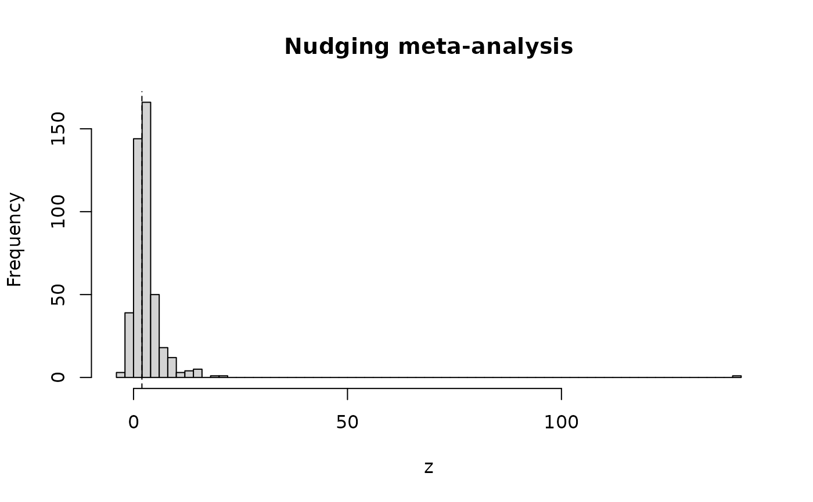

Effect sizes from the meta-analysis of choice-architecture ("nudge") interventions by Mertens, Herberz, Hahnel and Brosch (2022). The data set was the basis of the debate about publication bias in the nudging literature (Maier et al., 2022) and serves as the real-data example of this package. Each row is one effect size; several effect sizes may stem from the same study and several studies from the same publication.
Format
A data frame with 447 rows and 24 columns. The columns needed for
model fitting are cohens_d and variance_d. The variable descriptions
below are taken from the codebook of Mertens et al. (2022), available at
https://osf.io/49wtf/files/dvg3w.
publication_idPublication ID.
study_idStudy ID. Studies were defined based on independent samples; where an experiment compared multiple intervention conditions to the same control condition, a single study ID was assigned.
es_idEffect size ID.
referenceDescriptive reference of publication (i.e., authors + year of publication).
titleTitle of publication.
yearYear of publication.
locationGeographical location of intervention: 0 = outside United States, 1 = inside United States.
domainBehavioral domain of intervention:
"health","food","environment","finance","pro-social"or"other"(domains not covered by the other categories).intervention_categoryIntervention category based on the taxonomy by Münscher et al. (2016):
"information"(decision information),"structure"(decision structure) or"assistance"(decision assistance).intervention_techniqueIntervention technique based on the taxonomy by Münscher et al. (2016):
"translation"(translate information),"visibility"(make information visible),"social_reference"(provide social reference point),"default"(change choice default),"effort"(change option-related effort),"composition"(change range or composition of options),"consequence"(change option consequences),"reminder"(provide reminders) or"commitment"(facilitate commitment).type_experimentType of experiment as defined by Harrison and List (2004):
"conventional_lab","artefactual_field","framed_field"or"natural_field".populationTarget population of intervention: 0 = children and/or adolescents, 1 = adults.
n_studyOverall sample size of study.
n_comparisonSample size of control + intervention condition.
n_controlSample size of control condition.
n_interventionSample size of intervention condition.
binary_outcomeScale of outcome variable: 0 = continuous, 1 = binary.
mean_controlMean of outcome variable in control condition.
sd_controlStandard deviation of outcome variable in control condition.
mean_interventionMean of outcome variable in intervention condition.
sd_interventionStandard deviation of outcome variable in intervention condition.
cohens_dExtracted effect size of intervention (Cohen's d).
variance_dVariance around extracted effect size of intervention.
approximationApproximation involved in effect size extraction: 0 = no, 1 = yes.
Source
Mertens, S., Herberz, M., Hahnel, U. J. J., & Brosch, T. (2022). The effectiveness of nudging: A meta-analysis of choice architecture interventions across behavioral domains. Proceedings of the National Academy of Sciences, 119(1), e2107346118. doi:10.1073/pnas.2107346118
References
Harrison, G. W., & List, J. A. (2004). Field experiments. Journal of Economic Literature, 42(4), 1009–1055.
Maier, M., Bartoš, F., Stanley, T. D., Shanks, D. R., Harris, A. J. L., & Wagenmakers, E.-J. (2022). No evidence for nudging after adjusting for publication bias. Proceedings of the National Academy of Sciences, 119(31), e2200300119. doi:10.1073/pnas.2200300119
Münscher, R., Vetter, M., & Scheuerle, T. (2016). A review and taxonomy of choice architecture techniques. Journal of Behavioral Decision Making, 29(5), 511–524. doi:10.1002/bdm.1897
Examples
data(mertens_nudge)
str(mertens_nudge[, c("domain", "cohens_d", "variance_d")])
#> 'data.frame': 447 obs. of 3 variables:
#> $ domain : chr "food" "food" "food" "food" ...
#> $ cohens_d : num 3.08 3 2.77 2.65 2.24 ...
#> $ variance_d: num 0.0485 0.2342 0.3142 0.0715 0.0556 ...
# z-statistics pile up just above the two-sided significance threshold
z <- mertens_nudge$cohens_d / sqrt(mertens_nudge$variance_d)
hist(z, breaks = 60, main = "Nudging meta-analysis", xlab = "z")
abline(v = qnorm(0.975), lty = 2)
